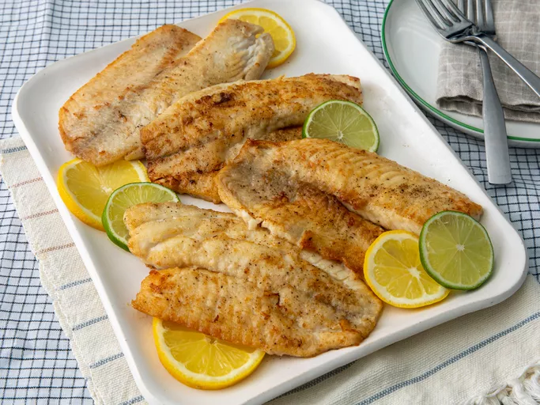

Pan-Seared Tilapia

Description
Tilapia is a freshwater white fish with a pleasantly flaky texture and mild flavor. It's one of the most popular types of fish in the United States because it's inexpensive, easy to find, and easy to prepare.
Ingredients
- 4 (4 ounce) Tilapia Fillets
- Salt and Ground Black Pepper
- ½ Cup All-Purpose Flour
- 1 Tablespoon Olive Oil
- 2 Tablespoons Unsalted Butter, Melted
- 1 Tablespoon Lemon Juice
- 1 Teaspoon Chopped Fresh Flat-Leaf Parsley
- ½ Teaspoon Chopped Fresh Thyme
Steps
- Rinse tilapia fillets in cold water and pat dry with paper towels. Season both sides of each fillet with salt and pepper.
- Place flour in a shallow dish. Gently press each fillet into the flour to coat and shake off any excess.
- Heat olive oil in a large skillet over medium-high heat. Cook tilapia fillets in the hot oil, in batches if necessary, until fish flakes easily with a fork, about 4 minutes per side.
- Brush melted butter onto the tilapia fillets in the last minute before removing from the skillet.
- Drizzle fillets with lemon juice and garnish with parsley and thyme.